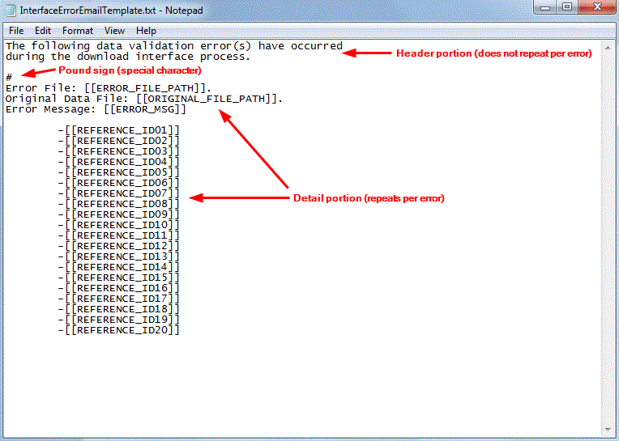

Creating a Custom Email Template
You can use email templates to define the structure of an alert
email. You can create these templates in any text editor (for instance,
Windows Notepad). The system does provide several default templates which
should meet most of your needs. Note that you will only need to create
a new template if you wish to send an alert with a specific information
layout.
Modifying a Default Email Template...
- We recommend that you do not modify the default email templates. Future
releases may include template updates, which will override your modified
template. Instead, copy an existing template and modify the copy.
Interface Validation Warehouse Alert Email Template Notes...
- In the shipped template for the Interface Validation warehouse alert, there is a pound sign (#) that is used for a special character, that indicates that all the information after it will repeat for each error listed in the alert email. If this # character is removed, the system will still send an email to the recipient that lets the user know that this character needs to be added back to the template.

Procedures...
-
Open Windows Notepad (or
another text editor), and create a new text document.
-
Enter any text and/or field references
required for this email.
- Save the template
in the Printing Directory on the application server. The system
will only reference templates stored in this directory.